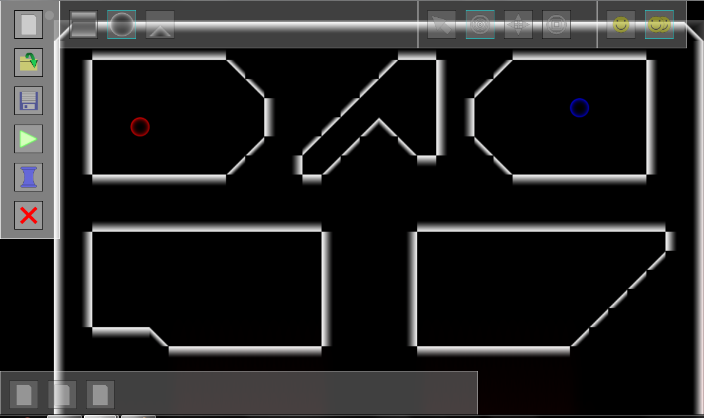
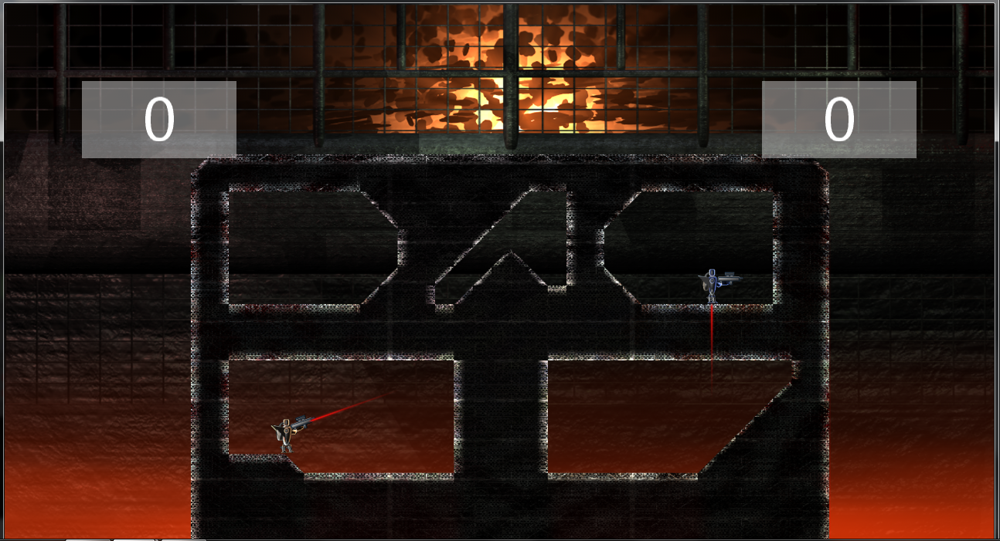
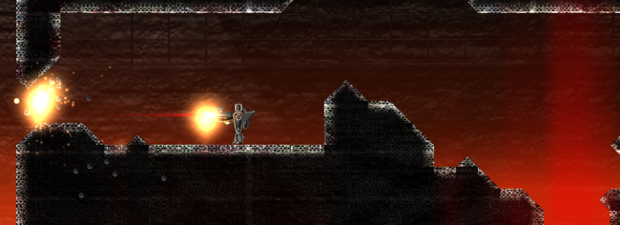
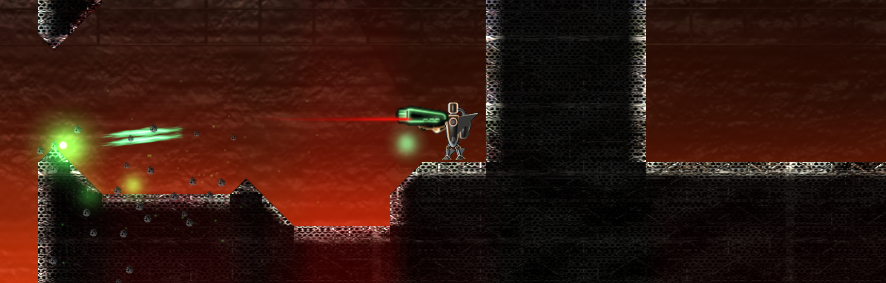
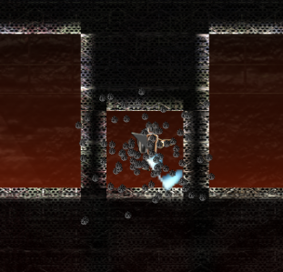
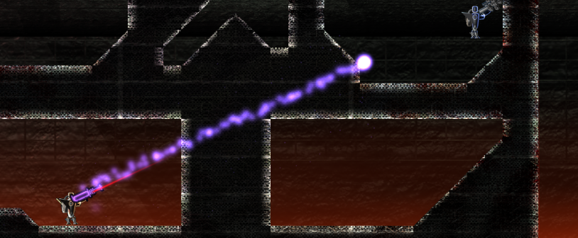
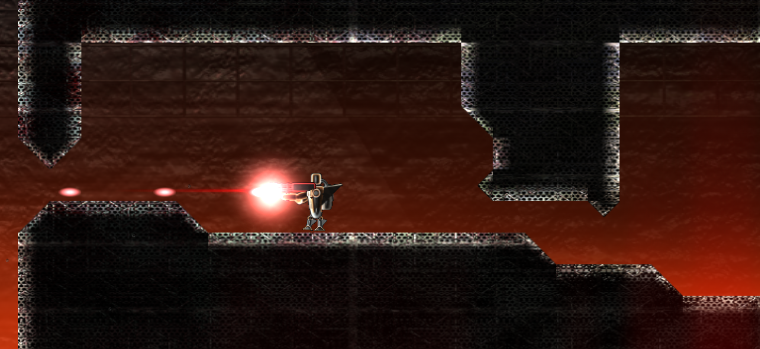

Duel bots is a two player hot seat arena battle game that I coded using C# and the XNA framework for windows and Xbox when I was 18. It has a number of different weapons and features a completely destructible stage as well as a level editor. The more damage a player takes, the farther he is sent flying when hit by a weapon until he is knocked off the stage and the game resets.
Gameplay Video:
Nerd stuff:
The most interesting technical part of the game was the system that handled the destruction of the stage. Since any block could be destroyed at any moment, I wanted to find an efficient way of rendering the evolving stage. All the blocks are stored into a texture that only redraws itself when something is destroyed. Then I can just draw the entire texture instead of all of the individual blocks instead.
More about pathfinding
The level editor:

The level editor as part of this game was really cool. You could move between playing and editing the level seamlessly by just pressing one button.
The result in game:

Notice how the blocks look different. They all got blended with another texture layer.
Weapon Types:

Machine Gun
Primary Fire: A stream of bullets with low accuracy.
Alt Fire: A grenade which can arc over terrain. Explodes after too much time or on contact with an enemy.

Slime Gun
Primary Fire: A stream of plasma with a slow firing rate. Extremely high damage good for close quarters.
Alt Fire: A grenade which can arc over small terrain. Explodes after too much time. Homes in on enemies during flight and sticks to them until it explodes. If the enemy dashes, the grenade is dropped.

Sword
Primary Fire: Your character dashes and then swings their sword destroying all blocks in a tight radius and doing high damage to enemies.
Alt Fire: knives which move slow but can pass through walls

Rail Gun
Primary Fire: A perfectly accurate beam which passes through walls and does high damage
Alt Fire: A plasma ball which can pass through walls and explodes when it reaches an enemy or an open space on the other side of a wall.

Laser Gun
Primary Fire: A stream of beads with high accuracy.
Alt Fire: A turret which fires a few beads before destroying itself.
40% nerd
20% artist
20% fitness nut
20% big brother
100% Heart